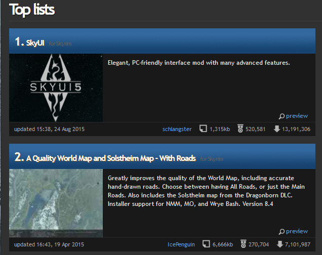

Assignment One
The screen based interface that will be evaluated is Skyrim on PC. Skyrim uses the same UI for PC and console. Many reviews for the PC version suggest that while this UI may be easy to use on console it can be unintuitive on PC.
The video above shows the menu screens being navigated using a mouse.
A further reason for evaluating Skyrim's interface is that currently two of the most endorsed Skyrim mods on Nexus alter the UI of the game in some way.
The most popular one, SkyUI, overhauls many of the menu screens in the existing interface. SkyUI describes itself as a "PC friendly UI mod for Skyrim" suggesting the creators don't think the UI is already "PC friendly".
Heuristics Analysis - Qualitative
The heuristics used were Pinelle's heuristics for video games and Nielsen's heuristics for User Interface Design.
Pinelle's defines "game usability as the degree to which a player is able to learn, control, and understand a game".
| Heuristic | Analysis |
|---|---|
| Provide consistent responses to the user’s actions. | The consistency of the responses depends on the user's input. Switching between input methods for the menu screens for example switching between mouse and keyboard. |
| Allow users to customize video and audio settings, difficulty and game speed | On PC Skyrim auto-detects the ideal video and audio settings and sets them. There is also the option to manually change any of those settings, however changing them above what the computer can run will effect how the game runs potentially making it unplayable. |
| Provide predictable and reasonable behaviour for computer controlled units. | ... |
| Provide unobstructed views that are appropriate for the user’s current actions | ... |
| Allow users to skip non-playable and frequently repeated content. | ... |
| Provide intuitive and customizable input mappings. | ... |
| Provide controls that are easy to manage, and that have an appropriate level of sensitivity and responsiveness. | ... |
| Provide users with information on game status. | ... |
| Provide instructions, training, and help. | ... |
| Provide visual representations that are easy to interpret and that minimize the need for micromanagement. | ... |
Focus Groups - Quantitative
A survey was used to gain quantitative answers about people opinions on the Skyrim UI. Each question was multiple choice or a rating on a scale of one to five.
The first question was asking participants how important they found the menu UI in a game to be on a scale of 1 to 5,1 being unimportant and 5 being very important. The mean result was 4.24, as the result is skewered towards the higher end of the scale this suggests most participants find the game UI important.

Graph showing how important participants find game UIs
Only 26.7% of participants said they had used UI mods on Skyrim. This low number could be due to them playing on console and therefore not having the option for UI mods or it could be due to them being content with the default UI.
Issues - questions could be bias, people could be bias, questionnaire restricts data given?